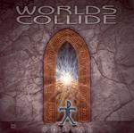

| Artist: | Worlds Collide |
| Title: | Portal |
| Label: | Inner Man Productions WCJPE001 |
| Length(s): | 58 minutes |
| Year(s) of release: | 1998 |
| Month of review: | [03/2005] |
| 1) | Eschaton | 1.35 |
| 2) | Ransom's Theme | 2.43 |
| 3) | The Portal | 2.35 |
| 4) | Advent-ageous | 6.19 |
| 5) | To Dream Again | 5.00 |
| 6) | When Worlds Collide | 6.27 |
| 7) | Taking In The View | 4.14 |
| 8) | Vital Spark | 3.34 |
| 9) | Spacious Design | 8.32 |
| 10) | The Aggressor | 3.15 |
| 11) | Perelandra | 2.37 |
| 12) | Deep And Wide | 5.10 |
| 13) | Eschaton (reprise) | 5.58 |
With Advent-ageous we arrive at one of the longer tunes. The rhythm box is doing plenty of work here, but fortunately rather in the background. This is poppy electronics, making me flashback to the eighties. It does enjoy some acoustic guitar in addition. A rather repetitive track.
To Dream Again is pure Tangerine Dream, more specifically Sun Gate. Maybe that is where the name comes from (or is this coincidence?). After the TDish opening the song takes a different tack with the advent of melodic acoustic guitar. In places, this song can be quite cheesy.
When Worlds Collide is not the title, but the artist track. This is a bit better again, although the poppy electronics continue. Surprising is the coming of the bass guitar, which is played very audibly and repetitively. A very nice touch, which lives things up a bit. There is more bombast here than the previous few tracks, and this is in fact when things do get more likable, as on the first few tracks. It also helps to mask the solo/programmed feel of the whole affair.
Taking In The View is a balladic/New Agey tune, reminding me most of Optical Race era TD. Friendly melodies trickle and tingle, sometimes a bit too friendly and sugary. Vital Spark is on the cosmic side at first, but soon erupts into a sharply sounding, percussive tune. A bit shrill this one. This is only for a short period, after which we move back into dreamy electronics.
Spacious Design is the longest tune this time around. A slow slightly cosmic build-up with the ticking of the clock in the back. Over it dance various light melodies, which sound attractive enough. At times, the music ascends to greater heights, with orchestrally oriented gestures. Nice one.
The Aggressor is one you might expect to be somewhat harder. The opening belies this. Military matching drums and orchestral linings are our due, and brassy keyboards as well. The string like keys give the song its orchestral feel, and the cymbals help to punctuate. Still, a live orchestra would be best (of course, I am aware this not an option).
Perelandra is melodic and soothing with a speed-up in places. The meody sounds familiar. When we slow down again, it is time for some electric guitar, a rather mellow one. Why not stick with keyboards then, if it is not to rock?
We are nearing the end with Deep And Wide. Pacey electronics give rise to a bit of tension. When the guitar takes over however the tension immediately deflates, and the drums are too programmed and prominent at the same time. More could have been done with this, it seems to me. The TD influence is obvious, but the pace is simply too low.
Eschaton (reprise) harkens back to the opening, but it is quite a bit longer. Or does it? The eletric guitar grinds out it's notes, the pace is high, and it seems we have a bit of a house remix here. The melody does sound a bit familiar, but the feel is totally different. I would have called this one a 'remix' instead. I also liked the intro version better.